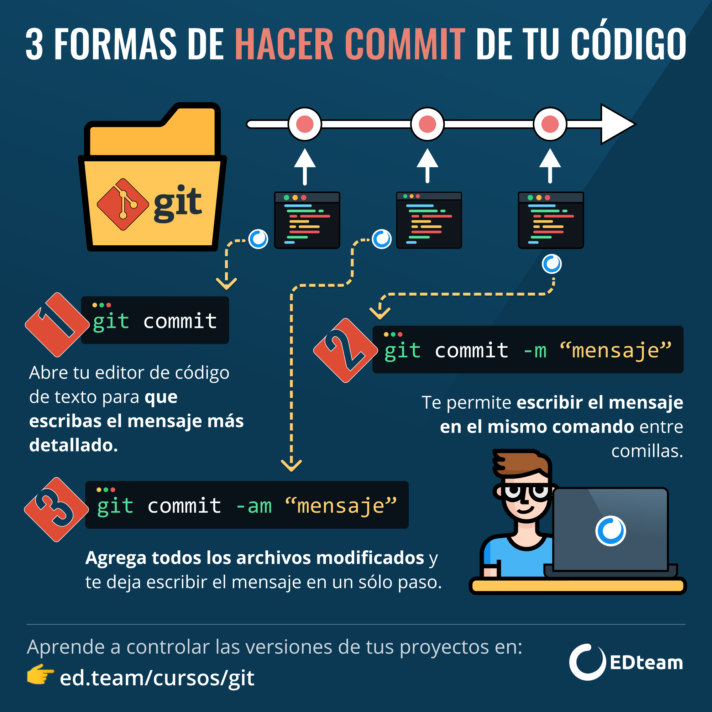
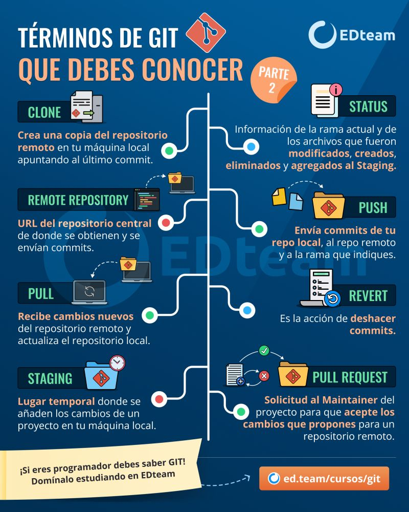
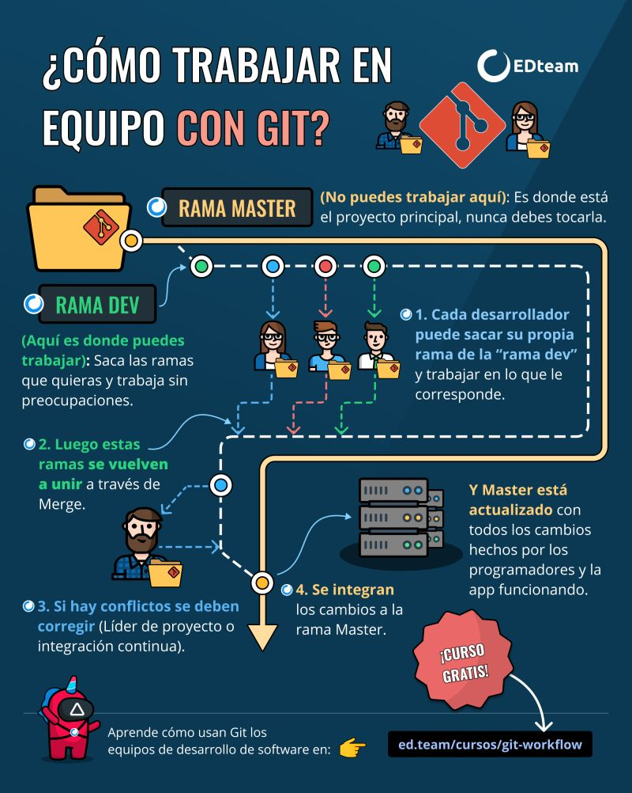
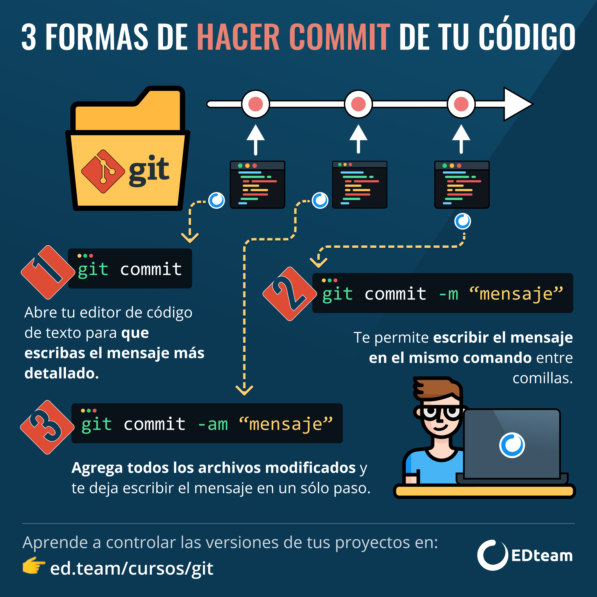
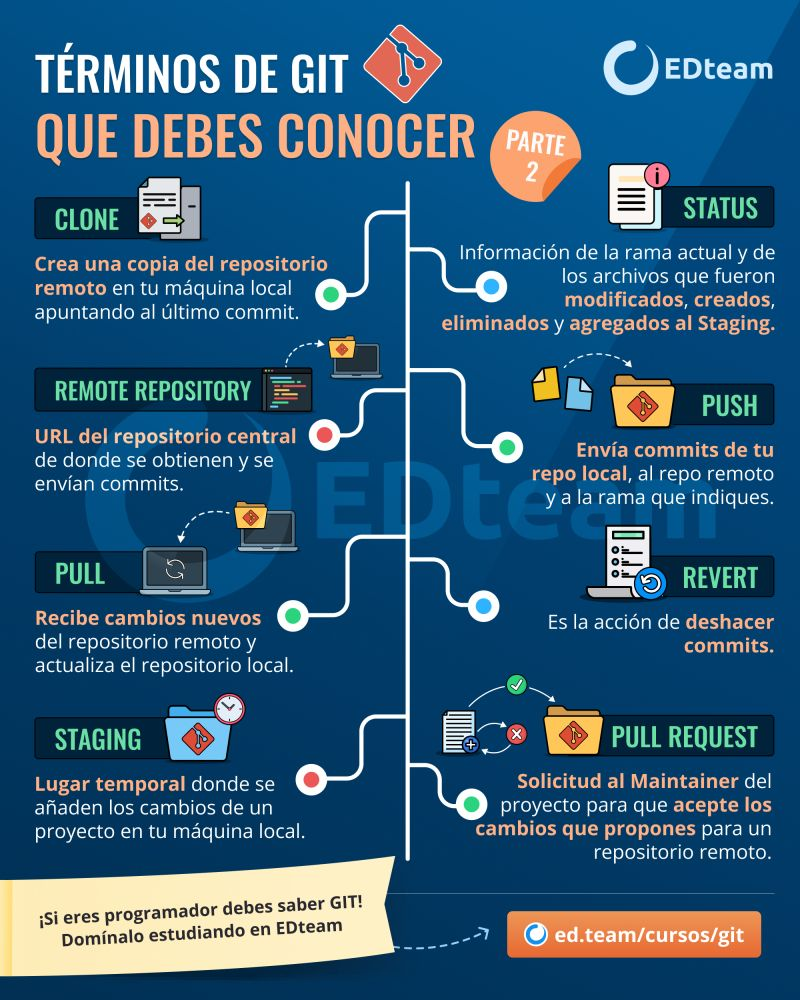
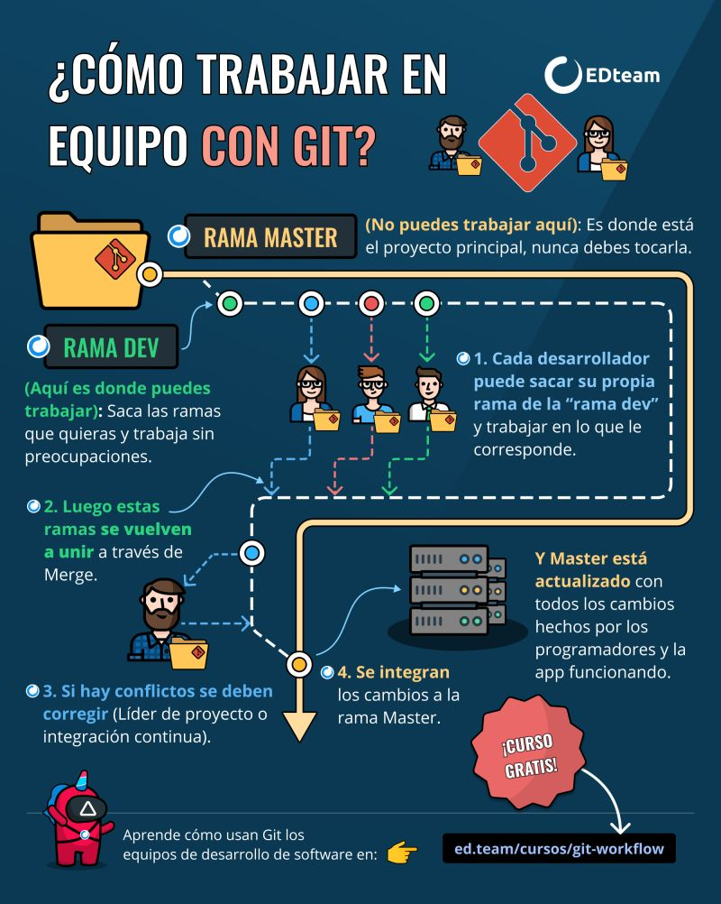

git init: Con este comando indicamos que el directorio donde nos encontramos comenzara a ser versionado bajo GIT
git status: Con este comando veremos el estado actual de nuestra carpeta versionada, asi como archivos que no estan versionados, archivo modificados, archivos eliminados etc., comoveras este comando sera de gran ayuda de ahora en adelante. Los mensajes que podremos ver con este comando puede ser los siguientes Untracked files: Nos mostrara todos los archivos que no han sido agregados al respositorio aun. Changes to be committed: Noa indica que archivos seran agregados a nuestro commit
git add: Este comando nos ayuda agregar a nuestros archivos que no esta bajo versionamiento (los Untracked files que vimos anteriormente)
git commit -m "mensaje"; Este comando es muy importante ya que es el que da comienzo al seguimiento de nuestros archivos que hayamos agregado con el comando (git add), como podemos ver con el parametro -m le indicamos un mensaje, el cual debe describir en pocas palabras la razon del commit
git remote add origin: url_del_repositorio; Como si fuera poco, hasta ahora todos nuestros comandos vistos (1 al 4) has sidopuro trabajo local, con el comando git remote add agregamos nuestro repositorio a un servidor remoto,y como lo hacemos bueno debemos de tener ya creado nuestro repositorio git en un servidor y este nos brinda una url ejemplo git@github.com:viviraprenderweb/git_training.git
git push -u origin master: Con este comando empujamos todo lo que tengamos en nuestro commits al repositorio remoto, para este caso a: git@github.com:viviraprenderweb/git_training.git Con este comando tenemos que tener una cuenta que nuestra llave publica debe de estar agregada en el servidor remoto.
git pull: Este comando nos baja los cambios que haya trabajado otra persona en el mismo repositorio, es recomenable siempre que trabajemos un repositorio que no hayamos iniciando nosotros hacer siempre un git pull primero antes de comenzar a trabajar en los archivos. Como vemos en la imagen se habia agregado el archivo README.md, por lo tanto este fue bajado a nuestra version local del repositorio
git remote -v: Con este comando podemos ver la url remota del repositorio en el que nos encontramos
git clone url_del_repositorio nombre _local ; Si queremos hacer una copia en nuestro directorio local de un repositorio existente usaremos este comando como lo mostramos acontinuacion:
git branch -all En git se trabaja con branch (ramas en español), originalmente se crea la master por defecto, a la raiz de esto nosotros podemos crear nuestas propias branch, siendo claro una copia de la master en primnera instancia, dicho esto con el comando git branch -all podemos ver todas las ramas que tenga el proyecto

 




